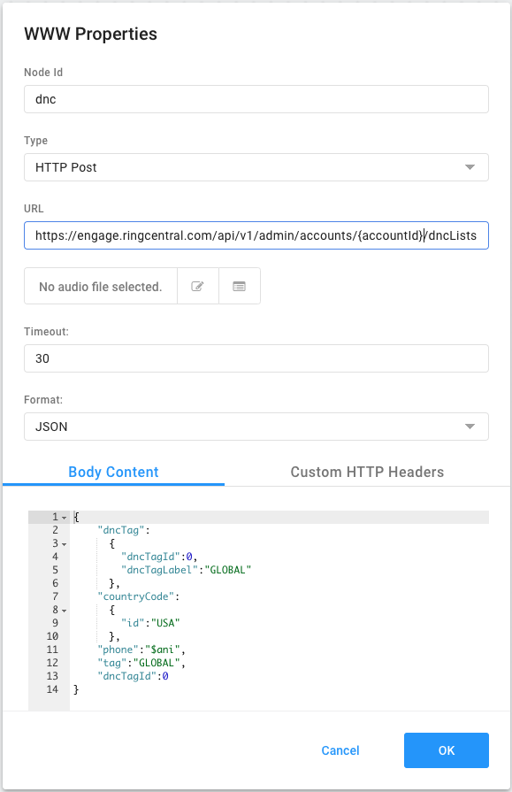

Learn how to allow callers to put themsevles on the do not call list by routing through IVR Studio and using the Engage Voice Platform API to add their number to the do not call list. Click the "Start Tutorial" button below to begin.
Start TutorialWelcome to the tutorial
This tutorial will walk you through the process of routing callers to options that allow them to put themselves on the do not call list.
For this tutorial, you'll do most of the work in the Engage Voice UI, but must add the caller to the do not call list using a REST API call.
Get input from the caller using DMTF
Let's begin by creating a workflow in IVR Studio that answers the call and asks for input from the caller about what they would like to do next. In this property window, we create two DTMF options that can direct the call down one of our two paths. The audio file instructs the caller what their options are and in this case, we have the option to leave a voicemail (1) or be put on the do not call list (2).
Route caller to DNC
Since the caller elected to be put on the do not call list by pressing "2", we can put them on our DNC list using the REST call. First click on the "?" and select "2" as the input connection property selection.
REST API endpoint for DNC
Let's configure the REST API call to place this caller on the DNC using their ANI (phone number). First we'll need to enter some information like the method (Type), endpoint (URL), and content type (Format) that will define this action.

REST API body content in JSON
Then we'll need to construct the request body (Body Content) using their ANI (phone number). The data for the JSON body content is shown here.
Replace {accountId} with your own account ID.
REST API HTTP headers for authentication
And finally add a custom header with your authentication token.
To create your own token, click here.
Replace the {your auth token} with the auth token you just generated.
Play audio for DNC
Now configure a Play Audio node to let the caller know that their ANI (phone number) has been place on the do not call list.
Close IVR workflow with hangup
With the caller's name now on the DNC, and after letting the caller know their name is on the DNC, we can hangup this call.